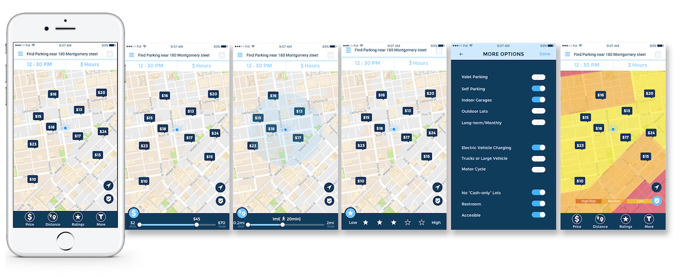

Parking finder helps you find the best parking spot. It will give you options to filter the result
and select them right on the map. App has a simple function that finds the parking spot, make a
payment, reservation and getting you to your destination easily and without fuss. Here are benefits
of using parking app.
1. Average parking rated were lower 2.Parking availability improved 3.Easy to find a
parking space 4.Easy to pay and avoids parking citation
2. STYLE GUIDE
- Iconography set -
3. FINAL MOCKUP
1. Login and Signup
 2. Filtered results by selecting options
Tab bar :
Main 3 options can adjust in the map view.
Adjustable Slider :
Users can adjust a range of prices, distance to the parking spot and see the filtered results
will be updated real-time
3. Make a Payment and Confirm 4. Notification and Set reminder 5. Other pages
DESIGN PROCESS
THE CHALLENGE: What is the problem?
Since I live near the city, I often need to find a parking spot and always feel frustrated and spend a lot
of time looking for it. I found some parking payment app in the app store, so I tried but I could not find
what I needed such as I was looking for a parking garage that has safety camera, restroom, enough parking
space for my minivan, close to the destination and good ratings. But it’s hard to use the app for looking
for those options at once. This case study examines an existing app’s UX and offers suggestions for
improvement, as well as a redesigned UI.
Image credit by https://pixabay.com/
(1) Parking problem
One 2011 IBM IBM +0.94% study found that 30 percent of a city’s traffic is attributable to people hunting
for parking with a third of New York City drivers reporting they search for 20 minutes on average. Research
conducted by Professor Shoup found that drivers looking for parking in a particular 15-block district in
Los Angeles drove an estimated 950,000 miles a year, equivalent to four trips to the moon. < Donald Shoup -
UCLA>
Parking app allows users to pay for hourly parking in certain parking lots with their phone. Paying with a
phone enables users to avoid the lines and wait associated with kiosks. This means less circling and double
parking, leading to clean air, safer street.
Benefits of using parking app
1. Average parking rated were lower. 2. Parking availability improved. 3. Easy to find a
parking space. 4. Easy to pay and avoids parking citation.
(2) Solutions
1. Easy check-in or without sign-up 2. Filtered results
shows on the map view (responsive results) 3. Easy payment or pay at parking 4. Get notification
before parking expired
First, I did user survey using google form for existing parking apps.
Summary from survey
Based on our survey we could conclude that people often need a help to find the
parking spot and some of them use mobile apps. A few of them know several parking apps but do not actively
use them. Our survey shows that 75% of participants consider the reservation is the most important feature
for the parking app.
Brainstorming ( Method: Affinity Mapping)
Results
Based on survey and analyzed present competitors, we brainstorming what kind of
features needed most to users and how to solve the problems. We were using affinity mapping tool and
categorized a similar group of experiences.From find parking spot to park their car, we need to think
carefully how users feel and act on every status.
Who are target audiences?
Based on the research and survey, I can narrow down target audiences. First, driving
commuters who works in the city, they need parking spots for long-term or daily rates. The number of people
looking for long-term parking space has been increased year by year.
Second, Visitors and tourists need parking spots. The especially big city like San Francisco, there
are lots of sightseeing and popular landmarks. So people needs a safe, reasonable price for parking.
Lastly, Owner of a parking garage or lots needs parking app. They want to make the profit and
advertise for their business.
Driving commuters
Tourists
Garage owners
Persona 1 : Driving commuter
User (Mark) story
Mark lives in San Jose, CA. He has an office in the San
Francisco. He needs to find long-term parking space for his electrical car. He prefers to bring his car
instead of taking a public transport. He wants to find cheapest and safe enough let his car until late
night.
Find cheapest parking spot near destination for
long-term rent, reserve it and make a payment
Persona 2 : Tourists
User (Lisa) story
Mark lives in San Jose, CA. He has an office in the San
Francisco. He needs to find long-term parking space for his electrical car. He prefers to bring his car
instead of taking a public transport. He wants to find cheapest and safe enough let his car until late
night.
Find the nearest parking spot, safety, and size of
parking space. See reviews, ratings, and photos. Extend parking time later.
User Experience Map
Based on the research and first user testing, I can make
user experience map and figure out when users feel satisfied at some point or feel frustrated. Through the
experience, we can assume that user’s emotions and perceptiveness. So I can find the problem and how to
solve.
I tested the first version of wireframe to five closest
friends and family. Two of testers are currently working and drive to go to their office. They sometimes go
to the san Francisco for attending workshops or just hang out with friends. One of them already using a
parking app but she did not fully satisfied. And another tester was used on demand parking app “luxe”. But
he did not use much, he feels not safe to give the car to strangers. So they were tested find parking spot
with select several options and make a payment after they get notification make extend time. Last 3 of
testers never used parking app before, so I tested simple process that finds a parking spot and make a
payment, get confirmation.Most of the testers succeed to find a parking spot and make payment but struggle
with finding filtered options. And they are satisfied after activities like notification for expired time
or rewards system.
User Testing
Iterate design based on user testing
I did three user testing and get good and bad feedback.
After second testing users still failed to find options and confused main menu. So I categorized features
from testing, which features or options most important. Price option can be difficult to filter but want to
adjust preferred price range. Safety rank options also show the main page, users can click the button and
shows the layered screen to which area is safe or not. Users can adjust a range of price and distance to
their parking spots, also they can be filtered other options. I want to give users simple experience to
filtered options and select where they want to go.


{kind=link}
{kind=link}
{kind=link}
{kind=link}
{kind=link}
{kind=link}
{kind=link}
{kind=link}
{kind=link}
{kind=link}
{kind=link}